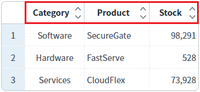
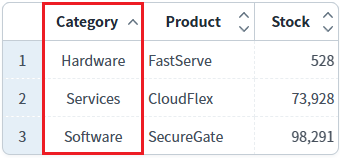
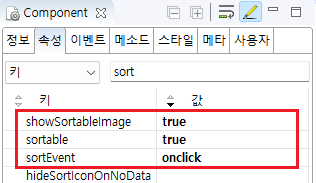
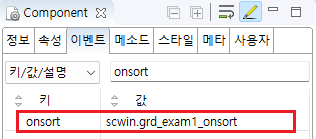

GridView의 'onsort' 이벤트를 설정한 예제입니다. onsort 이벤트는 GridView의 헤더에 클릭이나 더블 클릭으로 정렬이 변경된 경우 발생합니다. 이벤트 핸들러를 지정하면 핸들러에서 정렬이 발생한 헤더의 ID, 바디의 ID, 정렬 구분(오름차순, 내림차순, 정렬안함)값을 확인할 수 있습니다. DataList의 API를 사용하여 정렬된 경우는 발생하지 않습니다. ex) DataList의 메소드 sort, multisort 등
onsort 이벤트 발생 시 로그 출력하기
1
STEP 1: 초기 상태 확인하기
GridView의 헤더에 정렬 기능이 활성화되어 있습니다.
Image 1.브라우저(Chrome) 실행 예시

2
STEP 2: 헤더 컬럼의 정렬 기능 아이콘을 클릭합니다.
헤더의 'Category' 컬럼을 클릭합니다.
3
STEP 3: 실행 결과를 확인합니다.
'Category' 컬럼의 데이터가 오름 차순으로 정렬됩니다.
Image 2.브라우저(Chrome) 실행 예시

onsort 이벤트가 발생하고 이벤트 핸들러가 실행되어 로그가 출력됩니다. 예제 영역 '로그 확인' 또는 브라우저의 개발자 도구의 콘솔(console)탭에 출력된 로그를 확인합니다.
Example 1.Log
[14:15:08] ** scwin.grd_exam1_onsort **
headerId : h_col1
bodyColId : category
sortOrder : 1
json : {"headerId":"h_col1","bodyColId":"category","sortOrder":1}1
STEP 1: GridView의 속성을 정의합니다.
정렬 기능을 사용하기 위해 아래의 속성을 설정합니다.
[필수] sortable="true"
gridView의 헤더 클릭을 통한 데이터 정렬 지원 여부
[선택] showSortableImage="true"
정렬 가능한 컬럼의 헤더에 정렬 이미지를 출력.
[선택] sortEvent="onclick"
[default: ondblclick, onclick] 정렬을 수행할 이벤트를 정의.
Image 3.웹스퀘어 스튜디오의 Component View - 속성 설정 예시

Example 2.Source
<!-- gridView 의 소스 본문 예시 --> <w2:gridView sortable="true" sortEvent="onclick" showSortableImage="true"> <!-- 중략 --> </w2:gridView>
2
STEP 2: GridView의 onsort 이벤트 핸들러를 설정합니다.
예제 파일에서는 핸들러로 사용할 메소드명을 'scwin.grd_exam1_onsort'로 정의하였습니다.
Image 4.웹스퀘어 스튜디오의 Component View - 이벤트 설정 예시

Example 3.Source
<!-- gridView 의 소스 본문 예시 --> <w2:gridView ev:onsort="scwin.grd_exam1_onsort"> <!-- 중략 --> </w2:gridView>
3
STEP 3: 'scwin.grd_exam1_onsort' 핸들러를 정의합니다.
Example 4.Script
//GridView grd_exam1의 onsort 이벤트 핸들러 scwin.grd_exam1_onsort = function(artSortInfo) { // var _headerId = artSortInfo.headerId; // var _bodyColId = artSortInfo.bodyColId; // var _sortOrder = artSortInfo.sortOrder; //console에 log 출력 console.log(artSortInfo); };
sortable
showSortableImage
sortEvent
onsort